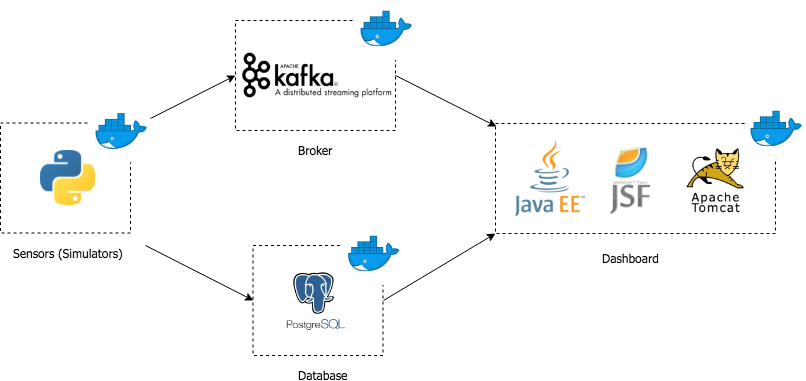

Architecture¶
Logical Architecture¶

Figure 10: Logical Architecture
Components¶
- Sensors (simulators): generation of values for the simulation of real data from sensors.
- Kafka (broker): used to handle the real-time data transmitted by the sensors and it is used to read and write streams of data like a messaging system. In other words, it’s the message broker that makes the bridge between the sensors and the server.
- Database: PostgreSQL database where are stored the values read from the sensors (simulators).
- Dashboard: user interface where realtime data and previous values are displayed to the user. This UI was implemented with JSF (and Primefaces) and is deployed with Tomcat (Java web server). In the dashboard, the user can see the realtime information (sent by the broker) in tables and previous values in charts (values that came from queries to the database).
Deployment Architecture¶
Connections¶
- Sensors send messages to broker (Kafka on port 9092) to topic SensorsValues.
- Consumer gets the messages from the broker and stores them at the database (PostgreSQL on port 5432 if it is in localhost or port 5555 if it’s in the virtual machines).
- Consumer also sends messages to broker for an actuator to read those messages (topic: ConsumerOrders).
- Dashboard receives information from the Kafka broker (in realtime) and from the database (historic).
- ELK: filebeats gets the logfiles from the consumer and sends them to the Logstash who sends to lasticsearch and then displays the data in Kibana.
- Ports:
- Kafka: 9092
- PostgreSQL: 5432 (localhost) or 5555 (VM)
- Adminer (Database Manager): 8010
- Dashboard: 8888
- Consumer (exposed ports): 5432 or 9092
- Containers:
- kafka
- lightsactuator
- simtemp
- simhum
- simuco2
- simmov
- simen
- consumer
- postgres
- adminer
- dashboard
- elk
- Containers in the VM:
- simtemp
- simhum
- simco2
- simmov
- simen (sensors)
- lighstactuator (actuador)
- consumer
- dashboard
- adminer
- elk
- Docker-compose:
- Dashboard: admin-starter.war file running on tomcat servlet.
- Consumer running on python3 environment with kafka-python and psycopg2 packages.
- Sensors and actuator running on python3 with kafka-python package (only for system testing).
- Database (PostgreSQL):
- database name: domotics
- user: postgres
- password: secret
- tables that should be created: presented in SQL file in Dockerbuilds/Postgresql/domotics_tables.sql
- Adminer image from docker hub.
BUS, Exposed API and External Interfaces¶
The sensors will send values to the topic SensorValues through a Kafka producer in Python. This values will be sent along with the key that identifies them: temperature, humidity, CO2, movement or energy.
After the values are sent, the dashboard has a consumer implemented in Java that uses Kafka Streams to read the values from the producer. The consumer checks the key sent and save the values in their respective “field” in a ArrayList. There were implemented functions that show in the dashboard the last value received according to the key and functions that process and calculate the average of all the values received.